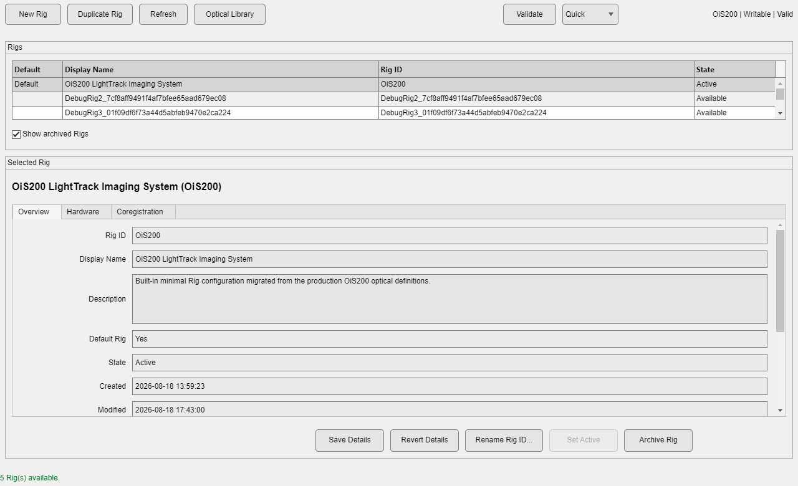
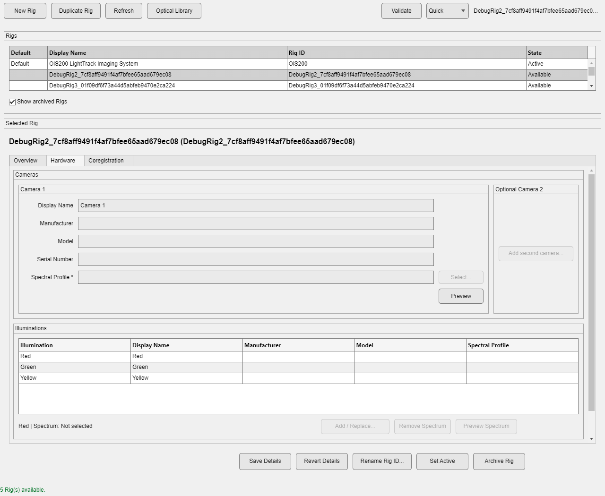
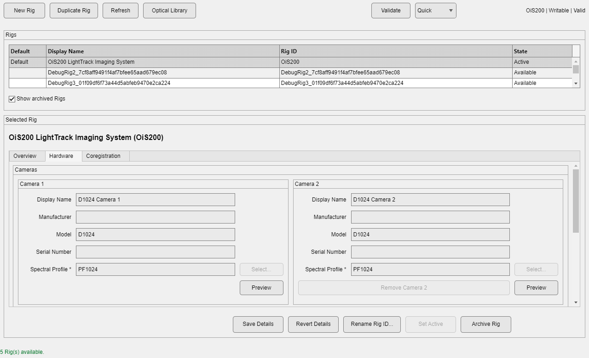
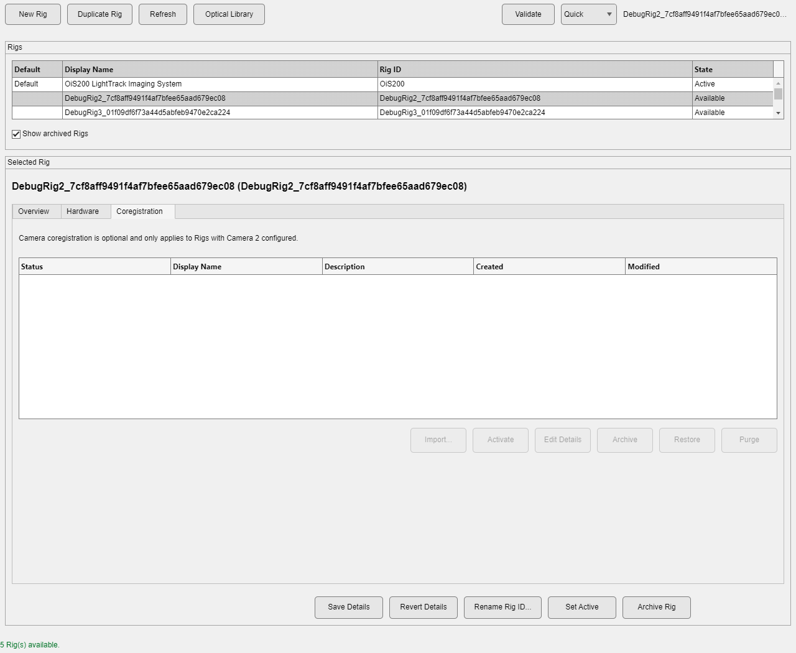
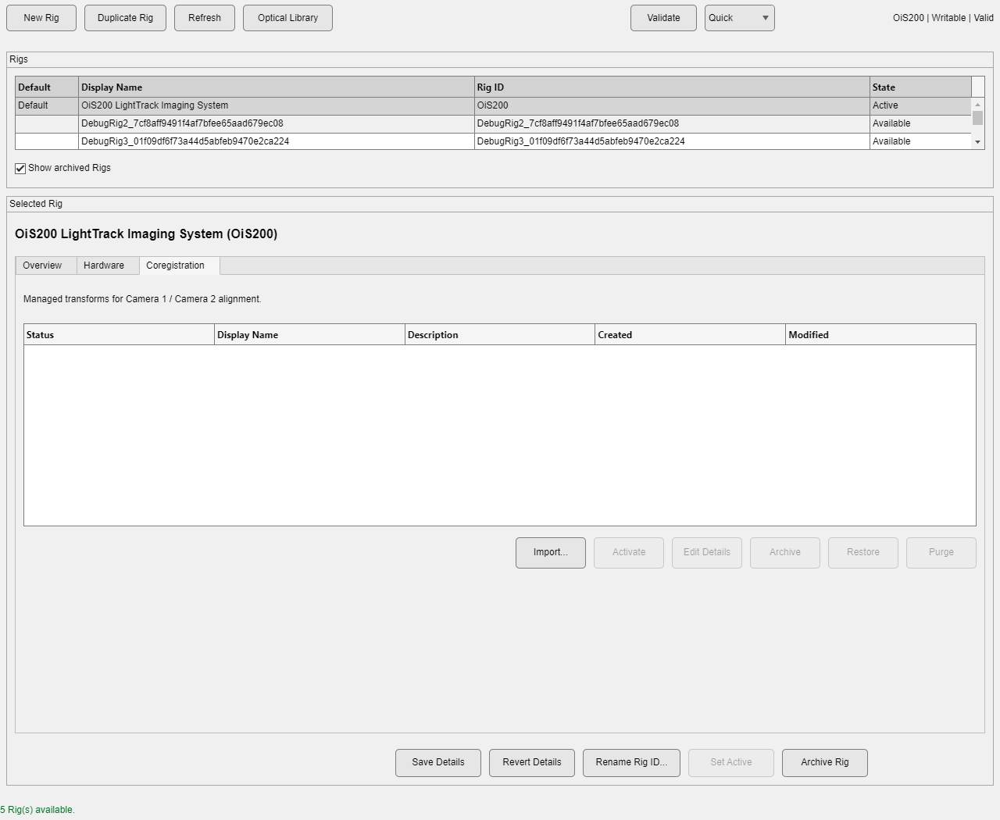
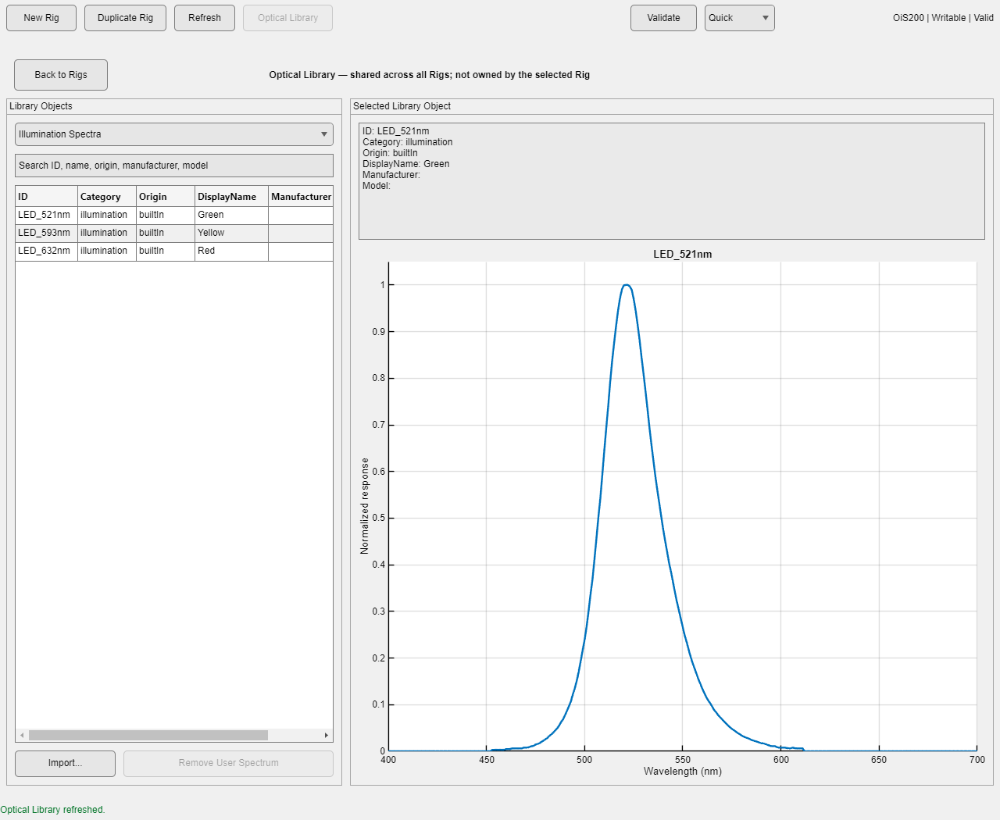

Assign Rig is enabled once data is loaded; Rig Manager is always available for administration.
Every recording is acquired by a physical imaging system — one or two cameras, a set of illumination sources, and the optical properties of each — and umIT needs to know which setup produced a dataset in order to interpret it correctly. Rig Manager is where that setup, called a Rig, is described and kept up to date: create a Rig, correct its hardware as your setup changes, and assign the right Rig to a recording session. The Optical Library underneath it holds the spectral profiles and filter sets that any Rig's cameras and illuminations can reference, so the same physical component doesn't need to be redescribed for every Rig that uses it.
A Rig is not a Project
Rig identity is independent of Project/Subject/Session metadata. Creating, editing, or archiving a Rig has no effect on which sessions use it — that is a separate assignment step, covered next.
Choose Management > Rig > Rig Manager... to administer Rigs: create new ones, correct or update their hardware, archive old configurations, and manage the Optical Library. Choose Management > Rig > Assign Rig for the everyday action of telling umIT which Rig acquired the data in the currently loaded Save Folder — it lists only readable Active or Available Rigs, marks the one currently assigned, and asks for confirmation before replacing it. Archived Rigs are never offered for a new assignment.
Assign Rig is enabled once data is loaded; Rig Manager is always available for administration.
The main workspace follows the same left-list/right-detail layout as Project Manager. The top toolbar provides New Rig, Duplicate Rig, Refresh, and Optical Library on the left, and Validate with a Quick/Full mode selector and a compact RigID | Writable | Valid status readout on the right.
The Rigs table lists every Rig with its default marker, display name, Rig ID, and state (Active, Available, Archived, or Invalid / unreadable). A Show archived Rigs checkbox controls whether archived Rigs appear in the list. Selecting a row opens that Rig below in a details panel with three tabs — Overview, Hardware, and Coregistration — and a row of contextual actions beneath the tabs: Save Details, Revert Details, Rename Rig ID..., Set Active (renamed from "Set as Default" when the Rig is not already the default), and Archive Rig / Restore Rig.
Built-in and newly created Rigs start with minimal information
A fresh Rig only carries the hardware identity and spectral profiles it needs to function — descriptive fields such as manufacturer, model, and serial number are left blank. Take the time to fill these in for your own equipment so each Rig's record stays meaningful once your lab has more than one.

Overview exposes the descriptive fields that are safe to edit with low friction: Rig ID, Display Name, Description, Default Rig, State, and Created/Modified timestamps.
Hardware separates the two device categories explicitly instead of exposing a generic metadata table.
Camera 1 is always present and shown as the standard configuration: Display Name, Manufacturer, Model, Serial Number, and a required Spectral Profile with Select... and Preview actions.
Camera 2 is treated as an exceptional, opt-in configuration. For a single-camera Rig it collapses to a single Add second camera... action; the full Camera 2 field set (and a Remove Camera 2 action) only appears once a second camera has been deliberately added.


Red, Green, and Yellow illuminations are always presented as rows of one compact table (Illumination, Display Name, Manufacturer, Model, Spectral Profile) instead of three separate panels. The canonical Illumination names are read-only; descriptive fields and the spectral profile are editable while Hardware editing is active. Selecting a row shows a contextual line below the table (for example Red | Spectrum: Not selected) with Add / Replace..., Remove Spectrum, and Preview Spectrum actions. The spectral profile is never free-text; it is always chosen through the picker described under Optical Library below.
Hardware fields are read-only until Edit Configuration is pressed, which stages changes locally (the status bar reports "Hardware edits are staged until Apply."). Pressing Apply checks that every configured camera has a spectral profile, then asks whether the change is a metadata correction to this Rig or a physical hardware change that should instead Duplicate as new Rig — because changing a camera's or illumination's physical spectral profile, or adding/removing Camera 2, can change how future analysis resolves that Rig. Choosing to duplicate follows the same flow as the toolbar's Duplicate Rig action, described below.
This tab exposes the same Rig-owned camera-coregistration resources managed by the Dual-Camera Coregistration tool, but only for review and lifecycle actions — Import..., Activate, Edit Details, Archive, Restore, and Purge — not for running a new calibration.
For a single-camera Rig the tab explains that coregistration only applies to dual-camera Rigs and keeps every action disabled:

For a dual-camera Rig the same tab becomes an active resource manager:

The toolbar's Optical Library action switches the whole workspace to a dedicated view for resources shared across every Rig, with a Back to Rigs action to return. A category selector switches between Illumination Spectra, Camera Spectra, Filter Spectra, and Filter Sets; a search box filters by ID, name, origin, manufacturer, or model.

Built-in entries can never be removed. User-imported spectra can be removed with Remove User Spectrum unless another Rig still references them, in which case removal is refused and the reason is shown. Filter sets use Add New and Edit Selected instead of Import/Remove, and reject duplicate IDs.
The Select... action next to a camera's or illumination's Spectral Profile field opens a picker rather than a plain dropdown of IDs. The picker shows the profile ID, its metadata, whether it is built-in or user-imported, a spectral curve preview, and an Import New... action so a missing spectrum can be added without leaving the Rig you are configuring.
Import New... accepts a plain text, CSV, or spreadsheet file with two numeric columns: wavelength in nanometers, and relative response (transmission, reflectance, or emission — whichever applies to that spectrum). A header row is fine; it is detected and skipped automatically. The source must cover the full 400–700 nm range with strictly increasing wavelengths and nonnegative, non-zero response values — it does not need to already be on a 1 nm grid, since it is resampled and normalized to a 0–1 peak on import.
For example, a manufacturer such as Semrock typically publishes a bandpass filter's transmission curve as a two-column CSV like this (illustrative values, not an exact reproduction of any specific datasheet):
Wavelength (nm),%Transmission 495.0,0.05 500.0,0.20 505.0,1.10 510.0,8.40 515.0,45.30 520.0,92.10 525.0,95.60 530.0,93.20 535.0,60.70 540.0,12.50 545.0,1.80
A file like this — as long as it extends out to cover 400 and 700 nm, even at near-zero transmission — imports directly as a camera, illumination, or filter spectrum.
New Rig starts a guided flow instead of an empty form:
Every camera in the definition must have a spectral profile before creation proceeds; an incomplete configuration is rejected with a specific message naming the missing camera.
Duplicate Rig (and Duplicate existing Rig from the New Rig flow) creates a new, independent Rig starting from an existing one: its descriptive metadata, cameras, and illuminations are copied over under a new Rig ID, but it never inherits the source's default status or its camera-coregistration history. Use this — rather than editing a Rig's hardware in place — whenever a physical change to your equipment should be tracked as a new Rig instead of overwriting the history of the one you already have.
Validate re-checks the selected Rig in Quick or Full mode and updates the RigID | Writable | Valid status text. A Rig that fails validation still opens so you can see what's wrong, but every control that could change it is disabled until the problem is resolved. Archived Rigs remain visible (toggle them with Show archived Rigs) and stay read-only until restored with Restore Rig. The current default Rig is marked in the Rigs table and only changes through Set Active, never by editing Rig metadata directly.